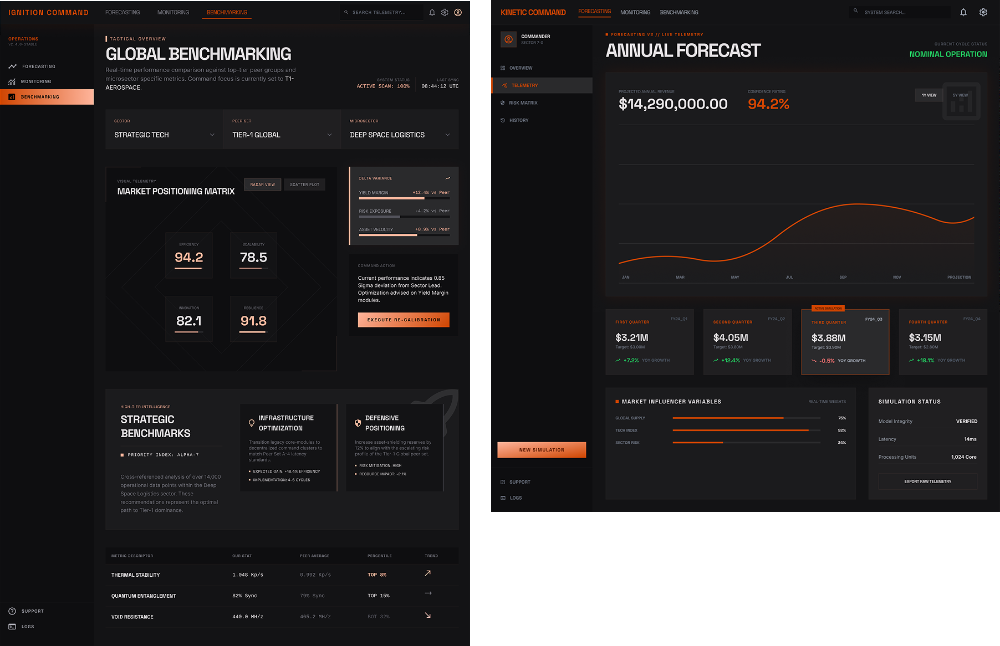
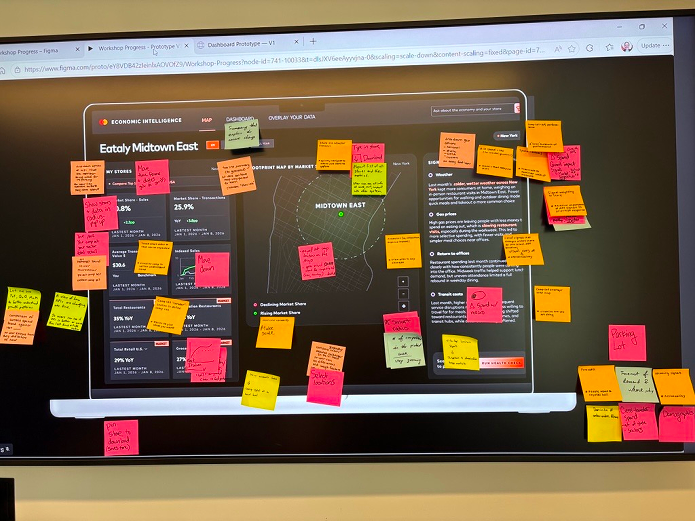
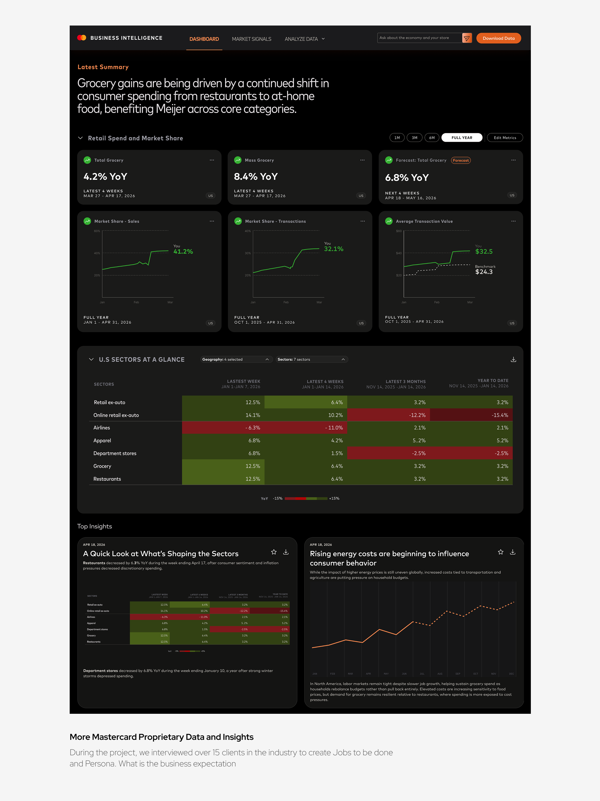
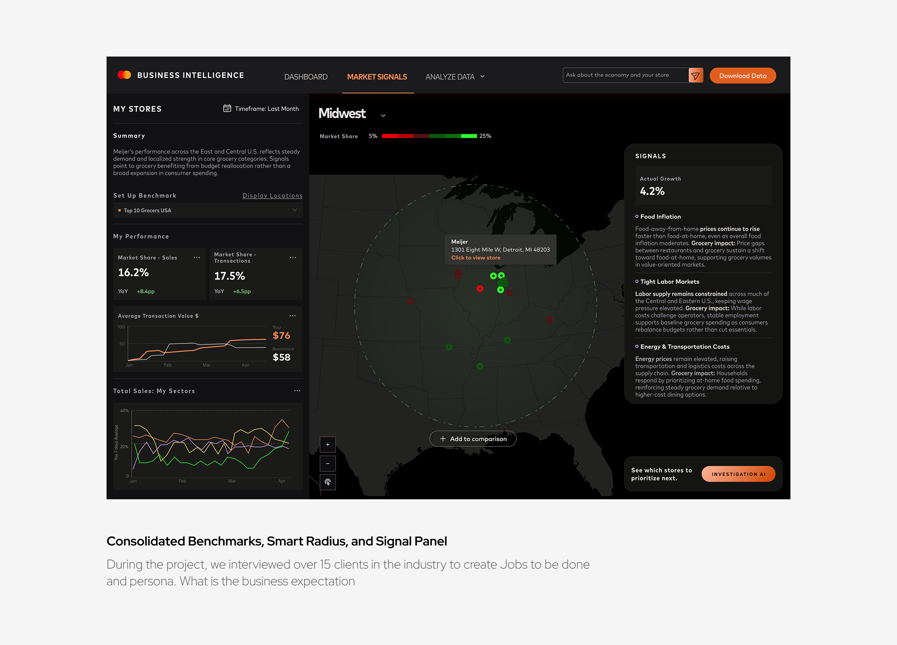
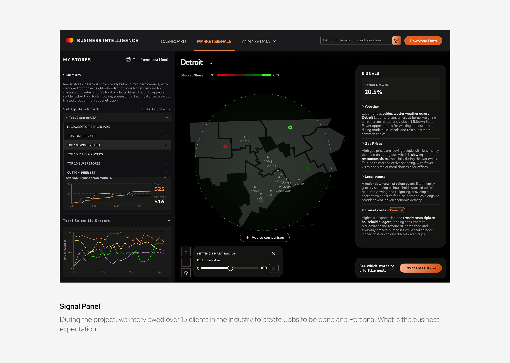

Leveraged AI to
explore boundary

Highlight 1 - Claude’s prototype echoed with the leadership in giving users the ability to know what happened, instead of focusing on individual tasks. The concept was demoed with partnership teams and won great excitement

Highlight 2 - Claude’s prototype echoed with the leadership in giving users the ability to know what happened, instead of focusing on individual tasks. The concept was demoed with partnership teams and won great excitement
Leverage on experts to
validate assumptions

Stakeholder feedback session 2 - 7 PMs were invited to give feedback over the modified protoype. Any ideas they have are documented on each sticky notes, later changed to a new prototype to show the team what we agree on.
Create a North Star Version to
align multiple work-streams



Title One
Supporting description for the first text box. Add your content here.
Title Two
Supporting description for the second text box. Add your content here.
Title Three
Supporting description for the third text box. Add your content here.
User Research
User Story
User Acquisition
Adam is a strategy analyst at Grocery A, working closely with executives and regional leaders to identify growth opportunities using data. At the start of Q1, leadership begins annual financial forecasting and relies on Adam to help shape the strategy. While browsing LinkedIn, Adam comes across a video from Mastercard's Chief Economists, highlighting a key insight: consumer spending is shifting toward at-home food consumption. The message immediately resonates with his current business challenge, and he opens the content.
The video leads him into Mastercard Business Intelligence, where he explores a report preview titled "Consumer Spending Shifts Are Reshaping the Grocery Landscape." The data confirms his hypothesis: Grocery demand is rising, but growth varies by location. To unlock the full insights, Adam signs up.
User Engagement
Know what
has happened
After onboarding to Economic Intelligence product, Adam gains access to premium grocery sector insights and a powerful economic monitoring tool customized to his regions and categories. He begins with the Economic Intelligent Dashboard, where macroeconomic trends are translated into concise AI generated insights for his business. The dashboards are intuitive and shareable. Adam evaluates both internal KPIs and market benchmarks grounded in Mastercard consumer spending data, helping him determine whether his business is outperforming or under pressure amid broader economic trends.
Know where
and why
To refine his Q1 strategy, Adam navigates to the Market Signal tab. Using smart radius filters, market share heatmaps and bottom 10 list, Adam identifies states and locations where the market is growing, yet Grocery A's share is declining. Supporting signals, coming from Mastercard Chief Economists like Michelle, indicating improving weather conditions and easing inflations are expected to drive local grocery demand.
Adam then benchmarks these stores against competitors and adjacent sectors using benchmark selector. He discovers the underperformance is significant — not only trailing top 10 groceries in US, but also lagging behind fast food and restaurant segments.
Know what to
do next
Adam navigates to the bottom 10 list and Investigator AI, which surface priority states and stores and recommends targeted interventions. One key recommendation is a 3-week lunch promotion projected to increase market share by 6% and recover approximately $210k in local revenue.
Adam consolidates these insights — performance gaps, state/store prioritization, and recommended actions — into clear strategy and successfully presents it to executives and regional leaders in Q1 review.
Deliver the MVP Experience
Main Flow - Dashboard

Main Flow - Market Signal


Increased Revenue
Mastercard Economic Intelligent provides a unique scaleable product for Finance teams at Fortune 500 companies.
Investment
100M
User Feedback
100M
Walmart
Target
Prada
LVMH
NIKE
LULULEMON
Publix
Reflections from Yingxiao
This project is interesting to me personally because how the innovative solution launched. The work itself validates to me that if we think from users' perspective and resolve their problems, the product will be noticed by clients.The work contribute to the larger industry efforts of giving the right tool for experts to unleash their full potential. While enterprise tool may sounds too statiscs and too, people who are using the tool.
To discuss this case study with me, feel free to send an email to lunaatlgt@gmail.com